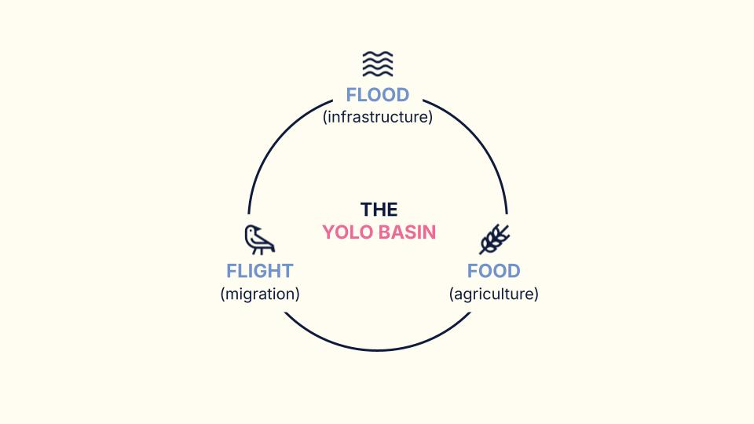
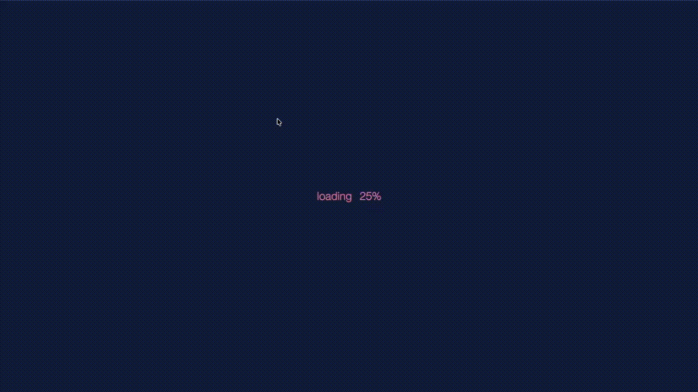
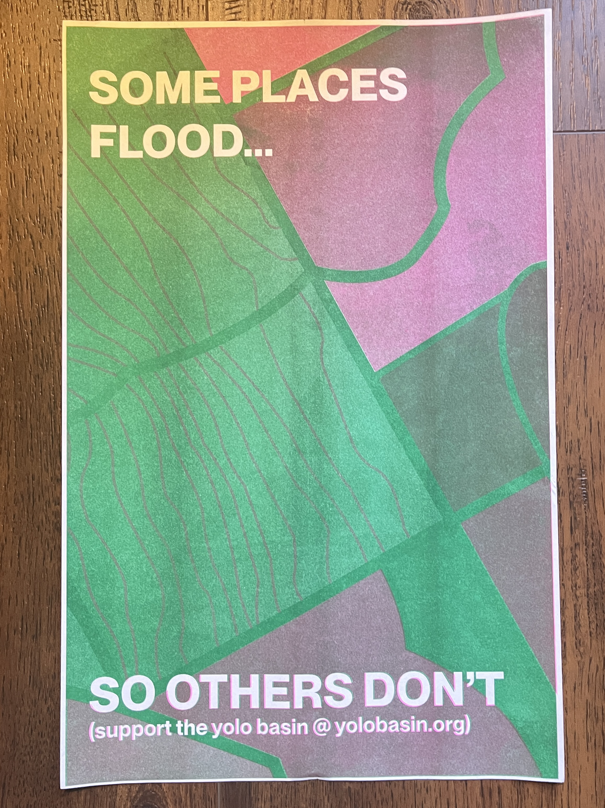

mfa thesis
designing for shared ecological understanding: the yolo basin
overview
This thesis looks at how information and interactive design can communicate complex ecological systems to public audiences. The project centers on the Yolo Basin, a landscape 15 minutes outside of Davis that simultaneously functions as flood control infrastructure, agricultural land, and a critical migratory bird habitat along the Pacific Flyway.
Working through a planet-centered design framework, the project translates environmental data and field research into accessible, meaningful experiences. The work spans an interactive website, a risograph poster series, literature review zines, and physical exhibition elements, each offering a different way to engage with the basin and its seasonal cycles.
the yolo basin
The basin operates across three overlapping identities: flood infrastructure in winter, migratory bird habitat in spring, and agricultural land through summer. These roles do not happen separately. They layer on top of each other, shifting with the seasons, and most people who drive past it on I-80 have no idea any of it is happening.
The big idea behind this thesis is that the Yolo Basin is a living landscape where flood, food, and flight intersect across every season. Design can make that story visible.

research methods
Research for this project was conducted on site and through the literature. I spent time walking and photographing the basin across different seasons, mapping spatial and seasonal patterns, and collecting data from environmental research and monitoring projects. I also completed an extensive literature review on floodplain systems, migratory habitat, citizen science, and design communication, which became the foundation for the zine series.

influences
Three projects shaped how I thought about communicating ecological information to public audiences.
Wingspan (2019) showed how real ecological data can become a playable, learnable system without losing scientific accuracy. Players learn bird behaviors through repeated interaction rather than instruction.
Xeno-canto (2005) translates birdsong into visual spectrograms paired with geographic metadata, creating an interface that works for both experts and curious newcomers. It also demonstrated how crowdsourced citizen science can fill gaps that long-duration data collection cannot.
This Is a Picture of Wind (2018) by JR Carpenter is a hybrid web and print project documenting flooding through diary entries. It showed how multiple formats create multiple entry points into the same material.
Together these pointed toward an approach built on interactive learning, participatory ecology, and personal storytelling around ecological concerns.
design outputs
interactive website
The website is the central platform for the project. Built in HTML, CSS, and JavaScript, it features interactive maps showing basin geography and seasonal change, data visualizations of ecological processes, and field notes from site visits. It is designed to be displayed on a monitor as part of the exhibition and accessible online.

poster series
Three risograph-printed tabloid posters, each exploring one of the basin's core themes: flood, migration, and agriculture. The posters are designed as public communication artifacts that translate complex ecological systems into something clear and visually direct. They are mass-printed so visitors can take one home.

lit review zines
As part of the literature review process, I created a series of small foldable zines summarizing and interpreting key readings related to the thesis. Topics include ecological systems, data visualization, design communication, citizen science, and the history and geography of the basin. Around 20 zines total, printed on 8.5x11 and folded down. They are available to browse and take home at the exhibition.
Browse the full zine series: The Lit Review Project ↗

embroidery hoops
Three 6-inch embroidery hoops depicting the basin's three seasonal stages. Each hoop layers embroidery over maps and aerial photographs of the basin, making the abstract geography tactile and intimate. These hang alongside the posters as part of the exhibition wall.
exhibition
The physical exhibition at the Shrem Museum is organized into three spatial zones. A context wall features a historical timeline of the Yolo Basin from 1851 to 2025 and a seasonal diagram. A making and research zone houses the embroidery hoops, posters, a zine shelf, and a pinboard of field notes and photography. An interactive station centers on the website monitor with a mouse for visitor exploration.
Visitors can pick up zines, take a poster, and interact with the website at their own pace. A possible stamp station, similar to national parks passport stamps, would let visitors take a small souvenir and encourage them to explore the full collection.
what this project is about
Design is a tool for making complex environmental systems easier to see, understand, and care about. This project is an attempt to do that for a landscape that most people pass by without stopping. The Yolo Basin is not a dramatic place at first glance. But it is doing a lot of work, ecologically and infrastructurally, and most of that work is invisible to the people who live near it.
The goal is not to teach people facts about the basin. It is to give them enough of an entry point that they start to notice it. A zine they read on the bus, a poster on their wall, a map they explore for ten minutes. Any of those is enough.